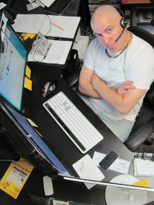

O cara da informática, versão empreendedores
Quando o faz-tudo é uma necessidade.

O cara da informática costuma ser aquele sujeito que resolve qualquer problema, sendo amado e odiado em proporções gigantescas dentro de uma empresa, e que sempre tem uma cópia atualizada e ilegal (pirata) daquele software fundamental para o funcionamento das atividades diárias.
Mas há um outro tipo de cara da informática, especialmente no ecossistema de startups.
Usualmente chamado de programador, outras vezes, para demonstrar algum respeito, referenciado como desenvolvedor. Mas vai muito além disso, pois é o verdadeiro full stack developer, que além de acumular DevOps e UX Design, também planeja, dimensiona, estrutura e administra toda a infraestrutura de informática, além do desenvolvimento. Saber fazer um bom café constitui-se em diferencial estratégico. Prática atual é dar a ele o cargo de CTO ou CIO, embora seja chefe de si mesmo. A melhor referência que encontrei é a de sócio-técnico.
É mesmo importante?
Investidores acabaram esclarecendo a importância de ter uma pessoa de perfil técnico entre os sócios. Sentem-se mais seguros e inclinados a investir numa empresa que tenha esse tipo de pessoa, pois o empreendimento estará menos sujeito à estagnação, estando o desenvolvimento nas mãos dos sócios.
Quando o coração do empreendimento não é um sistema computacional, até pode-se pensar em terceirizar o desenvolvimento e a administração, mas não no caso de empresas que sejam sistemas SaaS, por exemplo.
O problema
Há uma falta de técnicos que tenham algum conhecimento de todas essas áreas e sejam capazes de contribuir para o parto da empresa. Ou seja, não é uma questão apenas de conhecimento técnico para desenvolver um sistema WEB, mas sim, de ser a semente de uma futura equipe de TI, e ser ao mesmo tempo uma das sementes de uma nova empresa.
Ser sócio, administrador, vendedor, atendente, e não apenas o cara da informática. É dispor-se a arriscar, ser ágil, estar inserido na definição dos rumos estratégicos do empreendimento, ter o jogo de cintura da tática. As soluções
Onde encontrar pessoas tecnicamente hábeis, ou ao menos muito interessadas e aptas a aprender rapidamente (que acaba sendo a característica mais importante), tem sido um problema muito comum a empreendedores que não tenham conhecimento maior em TI.
A busca direta nos corredores e salas de instituições de ensino é um dos conselhos dados por aceleradoras, incubadoras, investidores e mentores. E é um bom conselho, pode ser muito eficaz.
Outro meio são locais especializados na busca de sócios, como por exemplo, eventos, ou sites como o CoFounders. Nestes, pode-se ter acesso a pessoas experientes, com maior facilidade.
Os mais experientes podem, além do conhecimento técnico específico, contribuir com sua maior experiência profissional conquistada em experiências diversificadas ao longo da carreira. Os mais jovens, em contrapartida, podem contribuir com sua falta de vícios corporativos, e vontade de consolidar uma vida de empreendedor.
Dicas de um velho novo cara da informática
Você é uma cara da informática versão empreendedor?
Não importa se pouco ou muito experiente, saiba que você está sendo procurado e muito disputado.
Participe de fóruns e eventos sobre empreendedorismo. Palpite nos problemas que se apresentam. Você ajudará alguém que não tem os seus conhecimentos, e eventualmente, poderá encontrar um projeto muito legal, com sócios bacanas.
Torne seu perfil do Linkedin um perfil atraente. O Linkedin não é um currículo online. É uma plataforma de negócios. E mais uma vez, esteja disposto a ajudar, sem esperar recompensas.